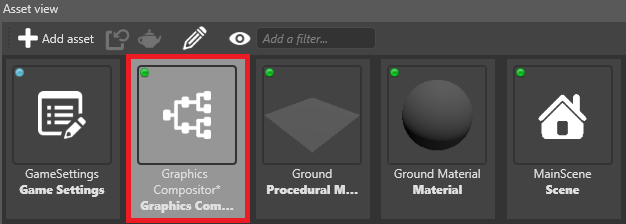
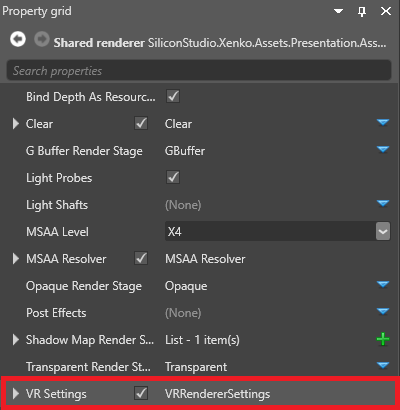
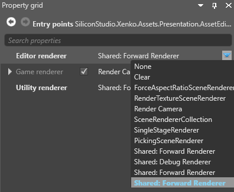
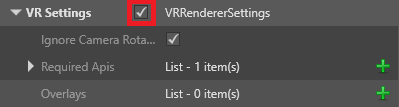

Preview a scene in VR
Warning
Приносим свои извинения за неудобства. Для этой страницы нет перевода на русский язык. Она будет отображаться на английском языке.
To preview your scene in your VR device, connect the editor to a VR-enabled renderer.
To do this:
In the Asset View (in the bottom pane by default), double-click the Graphics Compositor asset.

The graphics compositor editor opens.
Select the forward render node connected to the editor node. For example, in the screenshot below (taken from the Stride VR sample project), the editor is connected to the lower forward renderer node.

With the forward renderer node selected, in the Property Grid, enable VRRendererSettings.

Your VR device displays the scene preview. To display the scene on your monitor instead, disable VRRendererSettings.
Create a separate renderer to preview scenes in VR
If your editor and game nodes are connected to the same forward renderer, you might want to create a separate renderer dedicated to the editor. This lets you easily switch between previewing the scene in your VR device and on your monitor.
Note
If your editor and game nodes already use separate renderers (as in the VR sample project), you don't need to follow these instructions.
In the Asset View (in the bottom pane by default), double-click the Graphics Compositor asset.
The graphics compositor editor opens.

Create a new forward renderer node. To do this, right-click the game compositor editor and select Create > Forward renderer.

Select the Entry points node.

In the Property Grid, next to Editor renderer, select the forward renderer you created.

Stride links the editor to the forward renderer node.
Set the properties of the new forward renderer so they're identical to the forward renderer you use to run the game in VR, including the VR settings.
Tip
You can right-click a property to copy or paste it.

Note
Make sure the forward renderer has VR enabled. For instructions, see Enable VR.
Stride displays the scene preview in your VR device. To display the scene on your monitor instead, disable VRRendererSettings in the properties of the new forward renderer.
